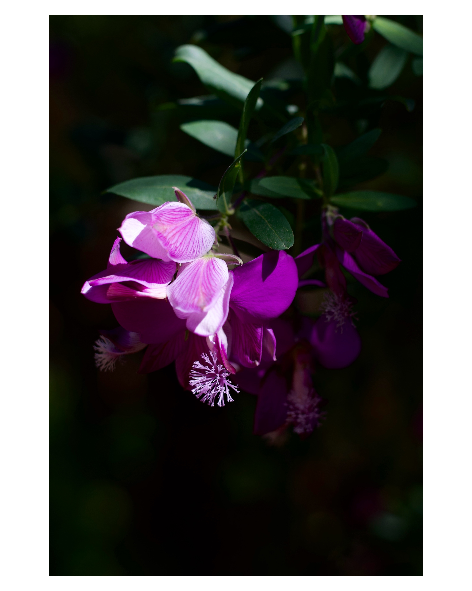

Cleanest white borders, fastest
Simple Border – single-purpose: pick a ratio, pick a color, export at full resolution with EXIF intact. Photos and videos.
Six iPhone apps that add white borders without cropping, compared on speed, quality, and workflow – including real export measurements from the same Sony ZV-E10 photo.
A white border does two jobs: it keeps the full photo visible on Instagram instead of letting the app crop it, and it gives a set of mixed photos one clean, gallery-style look. Plenty of apps can add one – the difference is how many taps it takes, whether the export keeps your original resolution and metadata, and how much unrelated editing UI sits in the way.
Full disclosure: Simple Border is our app, so this page is not neutral. To keep it useful anyway, we compare against the strongest alternatives on the App Store and list the honest downsides of every app here – ours included.
Simple Border – single-purpose: pick a ratio, pick a color, export at full resolution with EXIF intact. Photos and videos.
Square Fit – the highest-rated app on this list, with patterns, shadows, blurred backgrounds, stickers, and text on top of plain borders.
InstaSize – borders plus filters, presets, collages, and AI uncrop. The right pick if borders are only part of your editing.
What each official store listing offers, at a glance.
| Feature | Simple Border | Square Fit | InstaSize | White Border | No Crop | Whitagram |
|---|---|---|---|---|---|---|
| Video borders | ✓ | ✓ | ✓ | ✓ | — | — |
| iPad | ✓ | ✓ | ✓ | ✓ | ✓ | — |
| Mac | ✓ Apple silicon | ✓ Apple silicon | ✓ Apple silicon | ✓ Apple silicon | ✓ Apple silicon | — |
| Android | ✓ | — | ✓ | — | — | — |
| Batch editing | ✓ up to 10 | — | ✓ | ✓ up to 20 | — | — |
| Share extension | ✓ | — | — | — | — | — |
| Watermark | ✓ experimental | — | — | — | — | — |
| Suggested colors from the photo | ✓ | — | — | ✓ | — | — |
| Blurred border | ✓ | ✓ | — | ✓ | ✓ | — |
| Aspect ratios | 1:1, 4:5, 3:4, 9:16 + more | Many social sizes | Many social sizes | Multiple presets, including 1:1, 4:5, 9:16 | Square-focused | Square |
| US rating | 4.6 (100+) | 4.9 (76K+) | 4.7 (325K+) | 4.2 (5) | 4.7 (11K+) | 3.6 (696) |
| Last updated | 2026 | 2026 | 2026 | 2026 | 2025 | 2023 |
Ratings, update dates, and Apple-device compatibility checked on the US App Store on August 18, 2026. Android availability was checked on Google Play on the same date. The Mac entries are their iPhone/iPad apps made available for Apple-silicon Macs, not separate native Mac versions. No Android checkmark means no official Google Play listing from that app's developer was found. Feature availability is based on each app's own App Store listing – “—” means the listing doesn't mention it. “No Crop” is No Crop – Square quick sized by Hoang Pham.
About the rating gap: Square Fit and InstaSize are established, general-purpose editors. Simple Border is a newer, focused utility: choose it when you want a direct border workflow, full-resolution exports, and support across iPhone, iPad, Apple-silicon Mac, and Android rather than a large editing suite.
Simple Border does one thing: it frames photos and videos in the ratio you pick and fills the space with a white, black, custom-color, or soft blurred border. There are no filters, stickers, or collages to step around – choose the media, choose the ratio, export. The export keeps your original resolution (pixels are added around the image, never removed from it) and preserves EXIF metadata, including location and camera details. Despite the single purpose, the border itself is capable: smart color suggestions pulled from your photo, captions and camera details rendered on the border, and a watermark tool.
Square Fit is the highest-rated app in this comparison, and it earns it with range: besides plain borders it offers frames, blurred backgrounds, shapes, rounded corners, shadows, and patterns, plus stickers, text, and filters. It handles both photos and videos and exports in sizes for Instagram, Facebook, and other platforms.
InstaSize is a full editing suite where borders are one tool among many: filters, presets, color adjustment, collages, and resize presets for every social platform. Its AI “Magic Fill” can also extend the image to fill an aspect ratio instead of framing it – the opposite approach to a border, useful when you don't want visible bars.
White Border is a focused utility for framing photos and videos with multiple ratio presets, including 1:1, 4:5, and 9:16. It supports batch editing of up to 20 photos, solid, blurred, or image-extracted background colors, an adjustable border-size slider, even-border mode, rounded corners, an eyedropper, and HEX colors. The pitch is speed and volume rather than editing depth.
No Crop – Square quick sized squares photos quickly so the full image posts without cropping, and bundles collage layouts, decorative frames, filters, stickers, and blurred backgrounds on top. It's a solid quick fix for square posts if you also like the extras.
Whitagram is the original white border app from Instagram's square-only era, and it still does the basic job: put a photo on a white (or colored) background so it posts at full size. We couldn't find a location-preservation setting in the current app, and our test export removed both camera metadata and location.
We exported the same 2422 × 3633 source image from a Sony ZV-E10 RAW workflow through all six apps in August 2026. The target was a 4:5 frame with a 5% white border. Whitagram and No Crop could only produce a square result, so their dimensions are useful but not directly comparable to the four 4:5 exports.
Result: Simple Border was the only app in this test that kept both the camera metadata and location. It exported at 3059 × 3824 rather than downscaling the source. Square Fit and No Crop produced substantially smaller pixel dimensions; White Border kept general metadata but removed location.
| App | Output dimensions | File size | Camera metadata | Location | Observed workflow and output |
|---|---|---|---|---|---|
| Simple Border | 3059 × 3824 | 1.1 MB | Kept | Kept | 4:5 with a 5% border; retained high pixel dimensions. |
| InstaSize | 2907 × 3633 | 1.0 MB | Removed | Removed | 4:5; border appeared slightly smaller than the requested 5%. Photo collections were difficult to navigate. |
| White Border | 3060 × 3824 | 431 KB | Kept | Removed | 4:5; much smaller file at almost the same dimensions as Simple Border, suggesting stronger JPEG compression. Photo collections were difficult to navigate. |
| Square Fit | 1920 × 2400 | 344 KB | Removed | Removed | 4:5; output pixel dimensions were smaller than the source. |
| Whitagram | 3633 × 3633 | 970 KB | Removed | Removed | Square only; photo collections were difficult to navigate. |
| No Crop – Square quick sized | 828 × 828 | 76 KB | Removed | Removed | Square only; heavily downscaled, and we couldn't find how to change the border size. |
One-file test performed in August 2026. File size alone does not prove visible quality; dimensions, metadata, and GPS were checked separately. Workflow comments describe this test, not every version or device.

Platform availability and ratings were rechecked on August 18, 2026. These source links are grouped here so the main comparison does not send readers away while they are choosing.
For plain white borders with no extra steps, Simple Border is the fastest option and keeps full resolution and EXIF data. If you also want filters, stickers, and decorated frames, Square Fit or InstaSize are strong full-editor alternatives.
It depends on the app. In our Sony ZV-E10 export test, Simple Border produced a 3059 × 3824 image, while Square Fit exported 1920 × 2400 and No Crop exported 828 × 828. File size alone does not prove visible quality, but output dimensions reveal whether an app downscaled the result.
Simple Border, Square Fit, InstaSize, and White Border all frame videos. Whitagram and No Crop – Square quick sized are photos only.
Simple Border renders captions and camera details directly on the border and includes an experimental watermark tool. Square Fit, No Crop, and Whitagram add text on the photo itself. No other listing here mentions a watermark feature.
In our Sony ZV-E10 export test, Simple Border was the only app that kept both camera metadata and location. White Border kept general metadata but removed location; InstaSize, Square Fit, Whitagram, and No Crop removed both.
Simple Border works on iPhone, iPad, Apple-silicon Mac, and Android. Square Fit, InstaSize, White Border, and No Crop also work on iPad and Apple-silicon Macs; InstaSize has an Android version. Whitagram is iPhone-only.
New to borders? Start with the photo border guide. Posting to Instagram? See the Instagram format guide and the carousel guide.